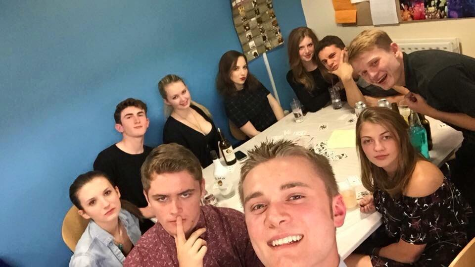

My Birthday
Date: 28th November 2015

Saturday 28th November was my 19th birthday. Receiving all my cards and presents in the post in the week leading up to the day, I was getting more and more excited to spend my first birthday in Sheffield. Having my sister come and see me for the day and night truly made my birthday more enjoyable with spending the day at the christmas markets and winning 8-2 in the football. To top a good day off, we went to town during the night with the flat and my sister's friend. Genuinely a birthday to remember.